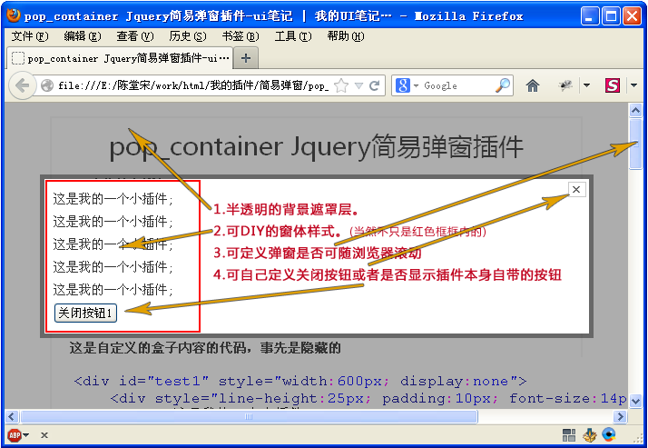
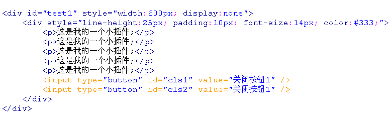
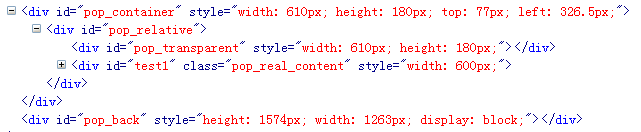
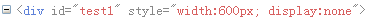

pop_container Jquery简易弹窗插件 2.0

● 1.0功能详解：直接看DEMO
- 兼容ie5.5+ 和遵循W3C标准的浏览器
- 代码大小1.93K（jquery.pop_container.min.js） 非常小巧
- 非常方便自定义插件样式，插件css和html代码分离。
- 有开发文档注释提供参考。方便您的二次开发和完善。可扩展性强。
- 插件是原创，本人的第一个jquery插件，应该可以做得很强大，因为简单所以易懂，高手手下留情。
● 2.0的变化：
- 插件css样式整合到了插件代码中，取消了1.0版的样式表
- 新增拖拽功能(默认可拖拽)。可设置拖拽的触点元素,默认是border(弹窗的半透明的的边栏)
- 可在参数自定义弹窗border边框颜色和透明度
- 可设置是否显示背景遮罩层,以及背景遮罩层的颜色和透明度
- 定位索引设置：z-index的参数以背景遮罩为准，向上逐层+1，默认设置是9997。
- 取消了1.0版本的css样式，封装到了插件中，但也不缺乏可塑性，参数设置丰富，你值得拥有。
这是自定义的盒子内容的代码，事先是隐藏的

下图是插件起效后 firebug看到的代码节构 ( 除了#test1标记是自定义的外，其他html元素都是插件动态加上的 )

关闭弹窗后，自定义的#test1弹窗内容还在，就是被隐藏了，插件生成的html代码被删除。

参数说明
$("#pop_open").click(function(){
$("#test1").pop_container({
btnClose :"", //设置其他关闭按钮 如:"#btnClose, .close1"
toggle :true, //是否显示右上角关闭 建议你自己定义个样式
scrollWith :true, //随滚动条滚动？
bdColor :"#000", //边框颜色
bdOpacity :0.4, //边框透明度
hasBg :true, //是否启背景遮罩
bgColor :"#000", //背景色
bgOpacity :0.4, //背景透明度，1为不透明
zIndex :9997, //最外层索引(背景遮罩)
dragble :true, //是否可拖动
dragHandle :"" //拖动触发点，默认是本身
})
})
调用示例1
//默认参数调用
$("#pop_open").click(function(){
$("#test1").pop_container()
})
调用示例2
$("#pop_open2").click(function(){
$("#test2").pop_container({
btnClose:"#cls2", //关闭按钮：#cls2
scrollWith:false, //随窗口滚动？不
toggle:false //显示插件自带按钮？不
})
})
调用示例3
$("#pop_open3").click(function(){
$("#test3").pop_container({
btnClose:"#cls31,#cls32",
scrollWith:true,
toggle:true
})
})
调用示例4 我自己美化的，，你懒得动手就用这个吧，， 看起来很不错！
$("#pop_open4").click(function(){
$("#my-demo").pop_container({
btnClose:"#my-demo .close,.winBtnCl",
scrollWith:true,
toggle:false
})
})
地区报价
| 交货地: | |
| 价 格: | |
调用示例5
$("#pop_open5").click(function(){
$("#test5").pop_container({
btnClose:"#cls5", //关闭按钮：#cls5
scrollWith:false, //随窗口滚动？不
toggle:false, //显示插件自带按钮？不
bgColor:#fff, //背景遮罩层颜色
bgOpacity:0.9 //背景遮罩层透明度
})
})
调用示例6
$("#pop_open6").click(function(){
$("#test6").pop_container({
btnClose :"#cls6", //关闭按钮
toggle :false, //不显示右上角关闭
scrollWith :true, //随滚动条滚动？
bdColor :"#f00", //边框颜色
bdOpacity :0.6, //边框透明度
hasBg :false, //不显示背景遮罩
zIndex :2046, //最外层索引(背景遮罩)
dragble :false //不可拖动
})
})
© 2013 ui笔记 | Powered by WordPress http://www.uinote.cn/